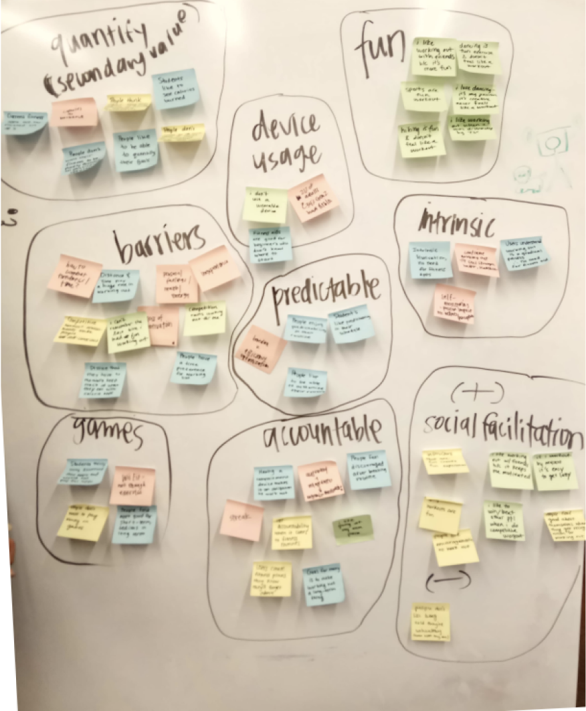
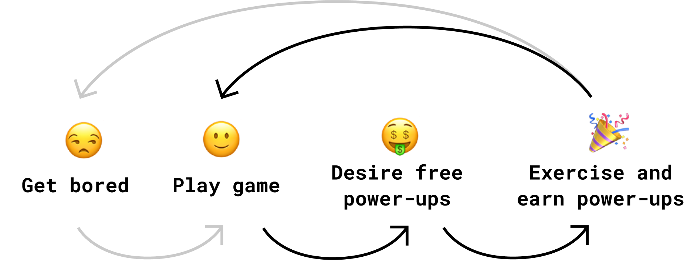
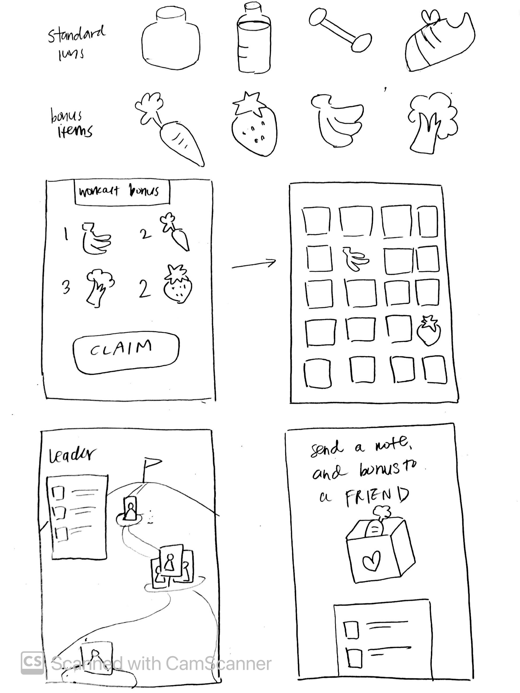

Background
This project was my first in the club, and my teammates were all new members.
(Typically, a team is comprised of 2 returning and 2 new members.) It was a
challenge to navigate such an exploratory, open-ended project, but ultimately, I'm proud
of our teamwork and how much we persevered at such a steep learning curve.
The design process is hardly ever linear and this project is no exception.
This case study explores the twists and turns we experienced over the course
of the semester.
Client Vision
Backed by a social good venture fund, our client envisioned a mobile app game that
would motivate fitness and consistency in its users. They requested our club's help to conduct
some preliminary research and explore potential designs to get them started.
User Problem
Users want to get fit and struggle with consistency and motivation.
Opportunity
Create a game that will track and encourage users to continue keeping active.
Research
Within our limited amount of time and resources, we approached our tasks with efficiency.
I pushed to get as many responses as possible in order to see more accurate trends.
Due to our direct access to students on campus, we constrained the user base
to our community of college students and collected as much data as we could.
Fitness Habits
Below, we have the aggregated data from 11 user interviews and 93 survey respondents.
- Fitness motivation is successfully sustained by feelings of newly gained health and strength
- Main barriers to working out are time management, distance from gym, lack of motivation,
and lack of sleep and energy
- Half of participants did not have consistent routines
- 72% have started a routine and stopped in the past year
- 57% have an issue staying motivated
Gaming + Fitness = ?
Because fitness and gaming has a complex psychology behind it, we sought seccondary research on current
trends and expert opinions.
- Users are more motivated to work out when they have a positive self-perception,
have healthy competition, and enjoy their workout.
- Users are more likely to play mobile fitness games when playing against friends.
- Users enjoy using Youtube as a source of fitness videos because there is less
chance of social anxiety, they are accessible, and Youtubers are engaging and
empowering.
Role as Sprint Leader
Our club structures its projects in 4 sprints, where each team member takes on a leadership role for each sprint.
I led Sprint 2 for ideation, which lasted two weeks and covered Research Analysis and Game Ideation. Here were some
of the tasks I completed:
- Created an agenda and slide deck for every team and client meeting
- Put together the critique deck for review by other club members
- Set deadlines and sent reminders before each one
- Led ideation and had everyone bring in one flushed out idea for a total of 4 ideas
- Organized our notes and slides in Google Drive
- Led affinity mapping workshop and research analysis
Research Analysis
I gathered up the team and suggested we affinity map our findings so that we could all be on
the same page and have a holisitic understanding of our user. We each filled out post-its,
worked together to find patterns, and grouped insights under a couple of themes:
Most salient pain points
- Time
- Fatigue
- Inexperience
Best ways to motivate
- Predictable regimen
- Being held to accountability
- Fitness as a secondhand consequence
Necessary chracteristics of the game
- Social facilitation
- Recognizing intrinsic motivation
- Entertainability

After research, we honed our problem scope some more to focus the game more on socialability and
guide our ideation more efficiently.
How might we utilize mobile gaming and its social and entertainment
components to help college students stay motivated to their fitness routine?
Game Ideation
More Secondary Research
When we split off to ideate, I did some extra secondary research into Gen Z’s usage of apps. I learned they felt games
combatted boredom and lifestyle apps were a vessel for maximizing their efficiency.
In my opinion, this was a crucial piece of information to work with, so I created a hypothesis that propogated
this cycle of motivation through balancing this equation of boredom and efficiency.

A prediction of user behavior and interaction with game
The Idea
I came up with Protein Crush, which is similar to Candy Crush. Instead of real candy,
the game icons can be healthy items e.g. bananas, weights, running shoes, etc. Instead of money or wait
time as currency, users earn power-ups through achieving fitness goals. Fitness data taken into the app would be translated into power-ups
that help the user crush more and advance through the game.
The idea weighs heavily on integration with Facebook in order to promote
social facilitation and healthy competition. One way to do this would be to let users send power-ups to each
other to encourage friends that are inactive.
Other ideas by my creative teammates include Tinder for gym buddies, scientifc visualizations of how fitness
impacts the body, avatar sports, and Yelp/4square for fitness and health.

Sketch of Protein Crush
Changing the Deliverable
We realized we did not have the capacity to design and build a mobile game, but
one design challenge we could tackle was the game's onboarding, where the purpose and intent
of the game is introduced and absorbed by the user. Because we wanted to design for
users to have a positive and healthy mentality towards fitness, as users oftentimes
don't when it comes to their bodies, it was vital to communicate and be transparent.
Users wanted predictablity in a mobile fitness game, and onboarding was one way we could deliver that.
It was especially crucial to inform users of how their data was used in the game.
It is also important to note that the game became abstract concept instead of one of our concrete game ideas.
Ideating for Onboarding
Here, we split off and sketched out ideas. My team then converged to highlight and number the screens
that we thought worked best for the onboarding process.
Visually illustrations most easily communicates the process of how the data collected is integrated
into the game, so I sketched a cat wearing an Apple Watch, walking, sweating, and earning bonuses.
My sketches for the game - most were used for visual illustrating the onboarding
Concept Testing
Using a mid-fidelity prototype, we tested these concepts on 6 users and took note of users' perceptions.
Feedback + Iteration
Human avatar vs. animal avatar
Effectiveness of onboarding in explaining how the user's data is integrated
Attitude towards social and competitive gameplay
General interest in product
Below is the mid-fidelity prototype, we used for the first round of testing: